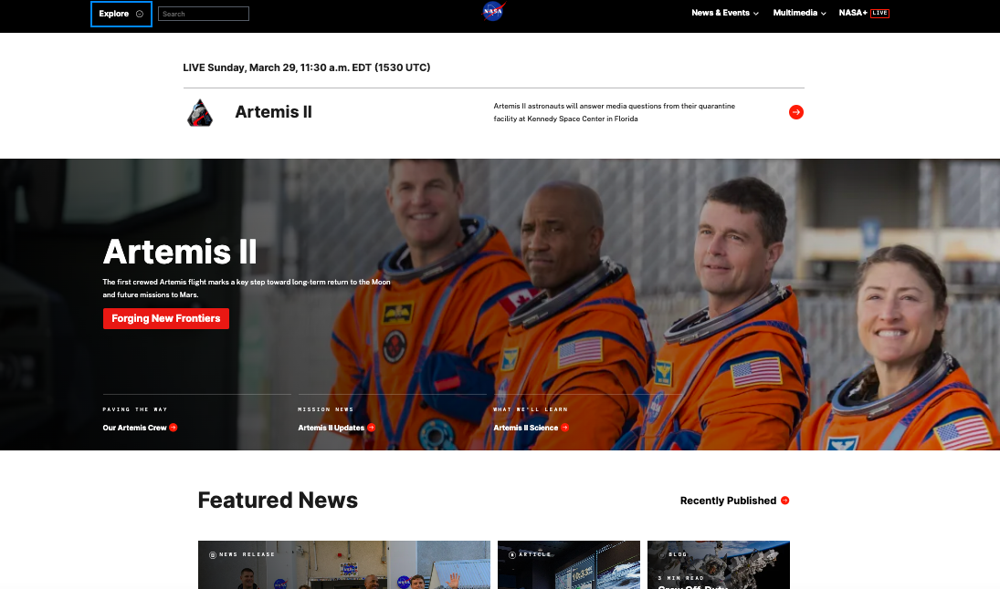

1. Website Name and URL
Name: NASA
URL: https://www.nasa.gov
2. Target Audience
The website is for students, teachers, space fans, and anyone who wants to learn about space and science.
3. Site Organization
The site has a top menu with sections like Missions, News, Images & Videos, and About NASA. Each section goes to more pages, so it is easy to find information.
4. CRAP Design Principle Example
The site uses Contrast by using dark text on light backgrounds, so it is easy to read. It also uses Alignment because the text and pictures are lined up neatly.
5. Accessibility Audit Score
The site gets about 90–95 on accessibility tools like Lighthouse, which means most users can access it easily.
6. Site Effectiveness
The website works well because people can find information about space missions, news, and images quickly and without problems.
7. Site Efficiency
The site is fast to use because the menu and search bar help users get to what they want quickly.
8. Engagement
The website is interesting and fun to use because it has videos, images, and interactive content. It fits well with space and science topics.
9. Recommendation
One way to make it better is to break big pages into smaller sections so users don’t feel overwhelmed by too much information.
10. Website Screenshot
This is a screenshot of the top part of the NASA homepage, showing the menu and main content.
